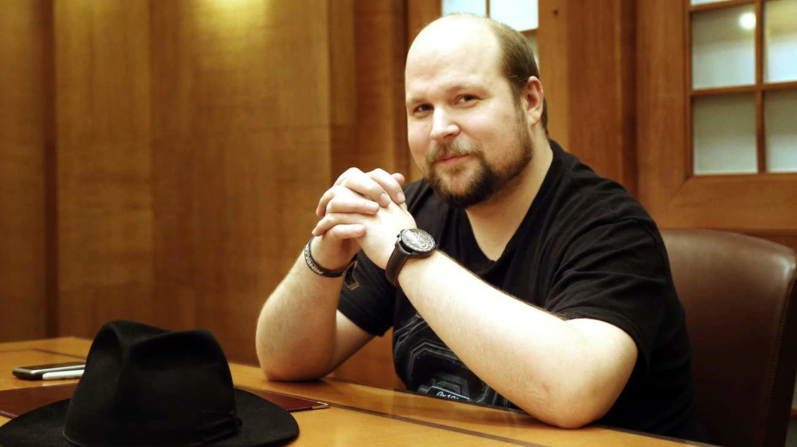
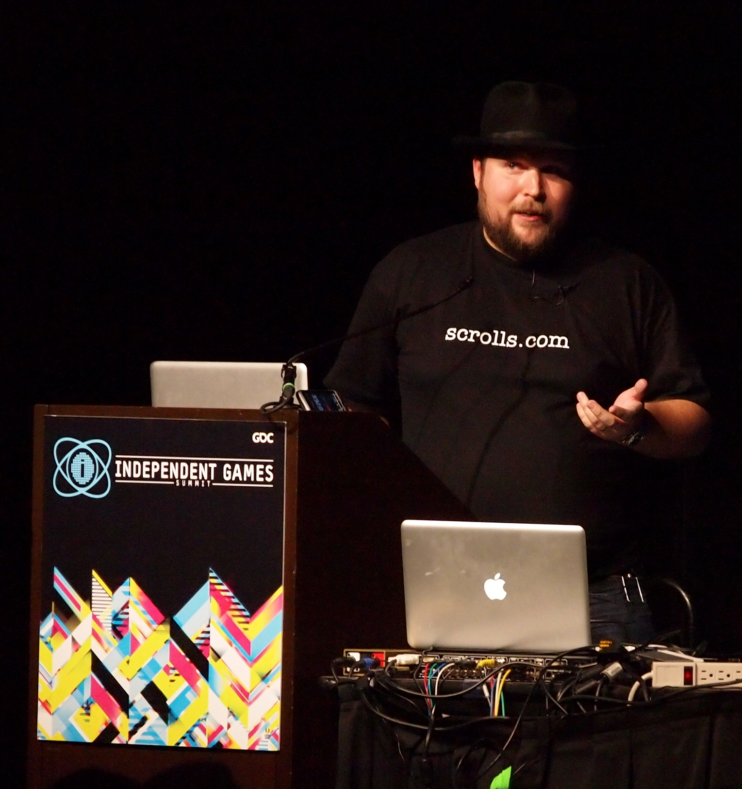

Minecraft
Игровой процесс
Перед началом игры нужно выбрать параметры для процедурной генерации мира[3][4]. Игрок может ввести начальное значение для генератора псевдослучайных чисел, позволяющего создавать уникальные и неповторяющиеся миры; это значение называется «сидом» (от англ. seed — «зерно»). Если игрок не введёт это значение, то игра сделает это автоматически, используя для начального значения время на системных часах[3][5][6]; два мира с одинаковыми значениями будут одинаковы[6]. Игровой мир, состоящий из расставленных в фиксированном порядке кубов, практически не имеет ограничений в пространстве[5] и делится на различные биомы, у каждого из которых есть свои климатические условия и объекты[7][8]. Дно мира состоит из каменного основания (англ. Bedrock), которое можно сломать только в творческом режиме[9]. Игровой персонаж появляется на поверхности земли в случайном биоме — например, в пустыне, горах, равнинах, лесах и так далее[3]. В игре нет каких-либо конкретных целей или сюжета — она строится на том, чтобы игрок импровизировал во время игрового процесса[10]. По мере прохождения Minecraft игрок получает достижения за выполнения определённых действий[11]. По умолчанию игрок управляет персонажем в режиме от первого лица, но он также может переключиться на режим от третьего лица[12]. Сам мир состоит из трёхмерных объектов, которые в игре называются блоками (англ. Block), и такие блоки различаются между собой текстурой, физикой и другими признаками. Игровой процесс в целом строится на добыче и размещении блоков, которые могут представлять землю, камни, руду, древесину, воду, лаву и многое другое[13]. Возможность сооружать различные конструкции делает игру схожей с конструктором LEGO[13][14]. Персонаж перемещается по миру пешком, преодолевая различные естественные препятствия[3]. Кроме игрового персонажа, в мире есть ещё неигровые персонажи: животные, деревенские жители и противники[3][15]. Деревенские жители находятся в деревнях, и с ними можно торговать полезными предметами за изумруды[15][16][17]: у каждого жителя есть профессия, от которой зависит, какие предметы он будет продавать[17]. В Minecraft есть смена дня и ночи, причём игровые сутки длятся 20 минут реального времени. Днём появляются дружелюбные существа, например, свиньи, овцы или коровы. Игрок может охотиться на них, добывая таким образом пропитание и материалы для создания определённых предметов, или разводить их с помощью корма[18][19]. Кроме того, можно оседлать свинью для быстрого перемещения по миру, стричь овец для получения шерсти, доить коров чтобы получить молоко. Игрок может выращивать растения вроде пшеницы или картофеля, чтобы добывать себе пищу мирным способом[19]. Ночью на поверхности появляются враждебные существа — пауки, зомби и скелеты, с которыми игрок может сразиться или же дождаться утра в безопасном месте. В неосвещённых местах, например, в пещерах, враги могут встречаться и днём[13][19]. Один из характерных для игры противников — «крипер» (англ. Creeper) — зелёное четырёхногое существо, которое при приближении к персонажу издаёт шипение, взрывается и уничтожает несколько блоков вокруг себя[20]. Некоторые враждебные существа днём вспыхивают и сгорают, если у них нет шлема или над ними нет блока[19]. В Minecraft игрок изначально появляется в обычном мире (англ. The Overworld), но кроме него есть ещё два параллельных измерения, которые опаснее и враждебнее по отношению к игровому персонажу — Незер (англ. The Nether) и Энд (англ. The End), в которые можно попасть через специальные порталы[21]. Незер — измерение с уникальными ресурсами и лавовыми морями[22]. Если игрок зайдёт в Незер, пройдёт какое-либо расстояние там и вернётся в обычный мир, то он переместится на гораздо большее расстояние. Таким образом можно совершать быстрые путешествия[22][23]. В Незере игрок может построить тотем из ингредиентов, которые находятся в этом измерении, чтобы призвать одного из боссов игры — Визера (англ. Wither)[24]. Энд — мрачное пустынное место, которое состоит из совокупности островов, парящих в пустоте. На центральном из них обитает Эндер-дракон (англ. Ender Dragon) — самый сильный противник в Minecraft, который может считаться финальным боссом[25]. Для того чтобы попасть в Энд, игроку нужно найти крепость самому или с помощью особых предметов — очей Эндера (англ. Ender Eye), которые указывают направление к этой крепости[26]. Эндер-жемчуга игрок может получить при убийстве эндерменов (англ. Enderman) — существ, нейтральных по отношению к игроку до тех пор, пока он на них не посмотрит (отсылка к Слендермену)[21][26][27]. Если победить Эндер-дракона, то игроку будет показана «Поэма Энда» — завершающий рассказ, написанный ирландским писателем Джулианом Гофом; «Поэма» представляет собой философский диалог между двумя оппонентами[28]. Однако на этом игра не заканчивается — игрок может вернуться в обычный мир через портал и продолжить игровой процесс[26]. Кроме инвентаря, у игрока есть очки здоровья, сытости и опыта[18][29][30]. Когда персонаж получает урон от атак противников или от падения с большой высоты, то его очки здоровья теряются[29]. Очки сытости нужно периодически восстанавливать пищей, однако игрок может переключиться на «мирный» режим сложности, чтобы эти очки не терялись. При истощении очков сытости персонаж начинает терять очки здоровья; в зависимости от режима сложности эта потеря может снизить здоровье до определённого уровня или привести к смерти персонажа[3][31]. Очки опыта нужны персонажу для того, чтобы можно было нанести чары на оружие, инструменты и доспехи и усилить их характеристики; при этом очки опыта расходуются в зависимости от чар. Их можно пополнить: при убийстве существ с них выпадают сферы опыта, которые можно подобрать[30]. В Minecraft также есть наковальня, предназначенная для починки оружия, инструментов и брони за опыт, а также способная переименовывать различные предметы[32]. Для хранения предметов персонаж использует специальное окно инвентаря, в котором можно хранить только ограниченное количество предметов. При смерти персонажа все накопленные предметы исчезнут из инвентаря и будут разбросаны на месте смерти, а сам персонаж появится снова, но уже на точке возрождения. Эту точку игрок может изменить, если создаст кровать и поспит в ней один раз[33]. Игроку нужно периодически спать, иначе около него будут появляться летающие противники — фантомы (англ. Phantom)[34].
Разработка
Предпосылки
Перед созданием Minecraft шведский программист Маркус Перссон в течение четырёх с половиной лет работал в компании Midasplayer (англ.) (позднее King) и участвовал в разработке браузерных игр. В свободное время Перссон изучал различные языки программирования, в том числе Java, и делал небольшие игры — одним из его проектов, который он разрабатывал вместе со своим другом Рольфом Янссоном, была массовая многопользовательская ролевая онлайн-игра Wurm Online (англ.). Согласно концепции разработчиков, действие игры должно было происходить в фэнтезийном мире, где игроки могли бы копать шахты, добывать ресурсы, создавать различные сооружения, воевать друг с другом и тому подобное. Wurm Online по своему замыслу должна была стать похожей на будущий проект Перссона — в игре планировалась почти полная свобода действий без каких-либо конкретных целей или сюжета. Несмотря на то, что политика Midasplayer запрещала сотрудникам получать прибыль со своих проектов, Перссон не переставал работать над Wurm Online — эта игра была для него «творческим убежищем», в котором он мог развивать свои идеи. Как только Перссон набрался знаний и освоил Java, он стал учить новых сотрудников компании, в числе которых оказался его будущий друг и сооснователь игровой студии Mojang AB Якоб Порсер. После знакомства Перссон рассказал ему о своей работе над Wurm Online, а Порсер поделился концепцией своего будущего проекта — он планировал сделать компьютерную версию коллекционной карточной игры Magic: The Gathering, в которой карты хранились бы на компьютере, а матчи между игроками проходили бы в режиме онлайн[a][63]. Весной 2007 года Перссон прекратил работу над Wurm Online из-за творческих разногласий с Янссоном, а в начале 2009 года покинул Midasplayer из-за строгой политики компании. После ухода Перссон сообщил Порсеру, что создаст новую игру и откроет с ним игровую студию, если она будет приносить хороший доход. Чтобы дальше зарабатывать себе на жизнь, Перссон устроился в компанию jAlbum AB, занимавшуюся разработкой платформы для создания онлайн-фотоальбомов; при этом Перссон договорился с руководством о том, что ему не будут запрещать разрабатывать свои игры и получать прибыль с них[b].
Процесс разработки
Изначально в Minecraft было всего два вида блоков (трава и булыжник) — игрок мог их только добывать и размещать[g][70]. Алгоритм генерации миров не позволял создавать реалистичные ландшафты, поэтому расположение блоков было хаотичным и не подчинялось «законам физики». В течение месяца после выхода первой версии Перссон добавил в игру песок, воду, лаву, а также примитивное динамическое освещение и физическую симуляцию жидкостей; спустя ещё месяц он начал тестирование многопользовательского режима. В последующих обновлениях вместо разбросанных в случайном порядке блоков стали генерироваться острова с деревьями, лугами и пляжами[66][70]. Перссон хотел взять некоторые идеи из Wurm Online и начать делать игру таким образом, чтобы она развивалась в сторону симулятора выживания с элементами ролевой игры, предлагая игроку не только конструктор, но и интерактивный фэнтезийный мир. Он размышлял над тем, чтобы Minecraft давала игроку какие-либо вознаграждения за определённые действия — Перссон считал, что просто ходить по миру игры будет неинтересно[68][69]. После выхода тестовой версии Перссон начал обдумывать модель ценообразования, чтобы вместе с Порсером основать игровую студию и продолжить разработку проекта в том же темпе. С 12 июня 2009 года Minecraft можно было купить за 13 $ — для этого нужно было зарегистрировать учётную запись на официальном сайте и скачать специальный клиент. Хотя браузерная версия игры, получившая название Minecraft Classic, оставалась бесплатной, Перссон прекратил обновлять её — теперь обновления могли получать только обладатели платной версии. За сутки Перссон продал 15 копий и заработал более 150 долларов; после выхода бета-версии он планировал увеличить стоимость до 20 $, после выхода стабильной — до 26 $. Несмотря на то, что Перссон работал над проектом в одиночку, с ростом популярности игры он стал использовать название Mojang Specifications как её студии-разработчика[h][66]. В августе 2009 года Перссон начал тестировать режим выживания и создавать различных существ[68]. Крипер — один из самых известных противников — появился в Minecraft случайно при попытке Перссона сделать модель свиньи. Поскольку Перссон для создания существ использовал язык программирования, а не специальные программы для моделирования, вместо того, чтобы сделать свинью длиннее, он перепутал переменные в коде и сделал её высокой с четырьмя ножками. Далее Перссон наложил на крипера зелёную текстуру и начал работать над его искусственным интеллектом: первое время криперы наносили урон в ближнем бою и взрывались только после смерти, в новых версиях они подходят к игроку на небольшое расстояние, начинают шипеть и взрываться через короткий промежуток времени[i][71]. С декабря 2009 года по февраль 2010 года обновления были выпущены под названиями Indev (от англ. In Development — «в разработке») и Infdev (от англ. Infinite Development — «бесконечная разработка»). Во время разработки игры это были наиболее значимые обновления, поскольку в Indev было реализовано создание предметов, а в Infdev — бесконечные миры[68]. После изменения алгоритма генерации миров Перссон столкнулся с его побочным эффектом: если персонаж пройдёт очень большое расстояние от центра карты до его края, то вскоре начнутся лаги, а сама карта будет слишком деформированной. Перссон назвал такую игровую область «далёкими землями» (англ. Far Lands), и ему понравилась идея загадочного места, которое практически нельзя достигнуть без чит-кодов[72]. Позднее у миров появились границы, и далёкие земли были удалены[73]. Несмотря на то, что Перссон никогда не тратил деньги на рекламу и не распространял Minecraft в интернет-магазинах, популярность проекта росла с каждым днём: в январе 2010 года было зарегистрировано 100 тысяч учётных записей, а в июне продано 20 тысяч копий игры. Он не спешил увольняться из jAlbum AB, а только сократил количество рабочих часов — Перссон считал это временным успехом[j][68]. В июне 2010 года началось альфа-тестирование игры, во время которого Перссон стал выпускать по пятницам «секретные обновления» (англ. Secret Updates). Суть этих обновлений была в том, что он не давал никакой информации о них, чтобы игроки смогли сами отыскивать новый контент[74][75].
В сентябре 2010 года Перссона пригласили в офис американской компании Valve, где он принял участие в тренинге по программированию и встретился с руководителем компании Гейбом Ньюэллом. После тренинга Перссону предложили работу в компании, но он отказался — вместо этого Перссон решил уволиться из jAlbum AB и основать игровую студию с Порсером. 17 сентября Перссон связался с Порсером через Skype, и они зарегистрировали акционерное общество (Aktiebolag) Mojang AB, стартовым капиталом которого стали деньги, заработанные с продаж копий Minecraft. Поскольку Перссон и Порсер хотели сосредоточиться на разработке игр, а не на бизнесе, они наняли Карла Манне — в прошлом менеджера jAlbum AB и работодателя Перссона, который занялся организацией бизнеса в Mojang AB, а немного позднее стал её генеральным директором[k][69]. С ростом команды в студии стали работать бизнес-разработчик Даниэль Каплан, арт-директор Маркус Тойвонен, ведущий программист Йенс Бергенстен и другие сотрудники[66]. В октябре 2010 года Перссон анонсировал новое измерение, которое можно будет использовать для быстрого путешествия, если пройти какое-либо расстояние там и вернуться в обычный мир, подобно методу перемещения в серии романов «Колесо Времени» Роберта Джордана[76][77]. Сначала Перссон хотел назвать его Адом, позднее, чтобы избежать религиозной отсылки, он стал рассматривать более оригинальные названия, такие как «Слип» (англ. The Slip) и «Нексус» (англ. The Nexus). В итоге Перссон назвал это измерение Незером и включил его в хэллоуинское обновление[78]. В декабре Minecraft перешла в стадию бета-тестирования и получила достижения, очки сытости, погоду, монстров, инструменты и творческий режим[74][79]. В марте 2011 года сотрудники Mojang AB посетили мероприятие Game Developers Conference в Сан-Франциско и обсудили с директорами японско-шведской компании Sony Ericsson (позднее Sony Mobile) разработку мобильной версии Minecraft. В ходе обсуждения руководители Sony Ericsson рассказали об убытках на фоне жёсткой конкуренции с американской компанией Apple и планах выпустить игровой смартфон Xperia Play. Чтобы привлечь интерес к новому продукту, они предложили Mojang AB разработать мобильную версию популярной игры и представить её вместе со смартфоном на выставке Electronic Entertainment Expo. Компания согласилась и наняла для этого программиста Арона Ниеминена, бывшего сотрудника Midasplayer, с которым работал Перссон. Через три месяца Mojang AB подписала соглашение с американской корпорацией Microsoft о портировании Minecraft на игровые приставки Xbox 360[l]. В мае 2011 года Перссон анонсировал «Небесное измерение» (англ. Sky Dimension), состоящее из парящих в воздухе островов: поначалу он планировал включить его в следующее обновление, потом отказался от измерения из-за проблем с его реализацией[80][81]. 5 октября Перссон сообщил в своём твиттере, что вместе с Бергенстеном работает над крупномасштабным обновлением, и опубликовал снимок экрана с порталом в новое измерение. Перссон полагал, что в Minecraft должна быть конечная цель, после достижения которой игрок смог бы продолжить игру, и решил добавить в это измерение дракона в качестве финального босса. Хотя Бергенстен посчитал дракона самым скучным и неоригинальным боссом, Перссон настоял на своём решении и через пять дней опубликовал трейлер «приключенческого обновления» (англ. Adventure Update), добавляющего измерение Энд и босса Эндер-дракона[m][25]. Перед тем, как выпустить стабильную версию Minecraft с новым контентом, разработчики выпустили несколько предварительных версий для тестирования[82].
Модификации
Модификации для Minecraft представляют собой дополнения к игре, которые создаются сообществом независимо от разработчиков самой игры. Существует более тысячи неофициальных дополнений, доступных для бесплатной загрузки из Интернета[163]. Модификации вносят изменения в оригинальный контент, что делает игровой процесс более разнообразнее: например, добавляют новые блоки, предметы или существ[164][165][166]. Модификации считаются основной причиной коммерческого успеха игры[167][168]. Сообщество, которое занимается разработкой дополнений на Minecraft, — одно из самых активных, если сравнивать с сообществами других игр[169]. Модификации доступны для изданий «Minecraft: Java Edition» и «Minecraft: Bedrock Edition», но не поддерживают устаревшее издание для игровых приставок и «Minecraft: Windows 10 Edition»